import pandas as pd
import statsmodels.api as sm
import statsmodels.tools.tools as sm_tools
from sklearn.linear_model import LogisticRegression, LinearRegression
from sklearn.neighbors import NearestNeighbors
from sklearn.preprocessing import StandardScaler
from sklearn.ensemble import RandomForestRegressor
from sklearn.metrics import mean_squared_error, r2_score, precision_recall_curve, average_precision_score, classification_report
from sklearn.model_selection import train_test_split
from scipy.stats import ttest_ind
import numpy as np
import matplotlib.pyplot as plt
import seaborn as snsGreenium or Hype? Analyzing Green Bond Pricing
PYTHON | SCIKIT-LEARN | PANDAS
Are bonds with green labels more expensive?
Introduction
Green bonds have gained increasing attention in financial markets as a sustainable financing instrument designed to fund environmentally friendly projects. Given their rising popularity, an important question for investors and policymakers is whether green bonds offer a pricing premium—commonly referred to as the “greenium”—compared to conventional bonds in the primary market.
Key Findings from Exploratory Data Analysis (EDA): - The dataset consists of both green bonds and common bonds, with significant differences in issuance amounts and sector distribution. - Yield at issuance and bond characteristics such as duration, coupon rate, and financial ratios do not show strong linear relationships, suggesting a need for careful matching in the comparison process. - The distribution of bond yields appears similar across green and common bonds, indicating that any pricing difference might be marginal.
To address potential selection bias, I employ Propensity Score Matching (PSM) with K-Nearest Neighbors (KNN) to ensure green bonds are compared to similar common bonds.
After matching, statistical tests reveal no significant difference in bond yields at issuance, suggesting that green bonds do not exhibit a consistent pricing premium in the primary market.
Data Cleaning & Exploration (EDA)
1. Data Overview
This dataset is a combination of three dataset platforms:
- Bloomberg is a global financial services company. It offers green bond identifiers.
- Factset is a financial data and software company. It supplements the dataset with additional information on company type (private or public) and leverage.
- SDC (Securities Data Company) Platinum is a database providing detailed information on new securities issues. Here I collect bond-level variables such as yield at issuance, amount at issuance (in millions), issuance date, assets before offering (in billions), Return on Assets (ROA), Moody’s Rating, and Fitch Rating.
# Specify the columns you want to import
#columns_to_import = ['greenid', 'index_country', 'sic2', 'annc_date', 'ln_at_billion', 'public', 'leverage', 'ROA','ln_amt_m', 'rating_21', 'yield_issue']
col_to_import = ['Issuer', 'ISIN', 'currency', 'Moody__Rating', 'moody_21', 'country','issuer_group', 'annc_date',
'issue_dt', 'mat_dt', 'amt', 'yield_issue', 'coupon', 'green_flag', 'ROA', 'at', 'db_af_offer','at_bf_offer', 'Status', 'sic']
# Read the xlsx file
data = pd.read_excel('base_bond_world_13_21_oct.xlsx', usecols=col_to_import)data.info()<class 'pandas.core.frame.DataFrame'>
RangeIndex: 78830 entries, 0 to 78829
Data columns (total 20 columns):
# Column Non-Null Count Dtype
--- ------ -------------- -----
0 Issuer 78830 non-null object
1 ISIN 78830 non-null object
2 currency 78830 non-null object
3 Moody__Rating 78813 non-null object
4 country 78830 non-null object
5 issuer_group 78830 non-null object
6 annc_date 78830 non-null datetime64[ns]
7 issue_dt 78830 non-null int64
8 mat_dt 78508 non-null float64
9 amt 78830 non-null float64
10 yield_issue 78830 non-null float64
11 coupon 78498 non-null float64
12 green_flag 1879 non-null float64
13 ROA 39752 non-null float64
14 at 41682 non-null float64
15 db_af_offer 41391 non-null float64
16 Status 78830 non-null object
17 at_bf_offer 45113 non-null float64
18 moody_21 43083 non-null float64
19 sic 75709 non-null float64
dtypes: datetime64[ns](1), float64(11), int64(1), object(7)
memory usage: 12.0+ MBprint(data.head(10).to_string()) Issuer ISIN currency Moody__Rating country issuer_group annc_date issue_dt mat_dt amt yield_issue coupon green_flag ROA at db_af_offer Status at_bf_offer moody_21 sic
0 Actual SA ARACAL560056 ARP NR AR Corporate 2018-04-10 21287 21652.0 0.497 28.00 28.00 NaN NaN NaN NaN Priv. NaN NaN 6141.0
1 Actual SA ARACAL560064 ARP NR AR Corporate 2018-10-03 21462 21827.0 0.318 35.00 35.00 NaN NaN NaN NaN Priv. NaN NaN 6141.0
2 Agroempresa Colon SA ARACSA560018 US NR AR Corporate 2017-07-12 21018 21748.0 4.000 6.90 6.90 NaN NaN NaN NaN Priv. NaN NaN 139.0
3 Agroempresa Colon SA ARACSA560042 US NR AR Corporate 2018-01-04 21196 22292.0 0.400 7.50 7.50 NaN NaN NaN NaN Priv. NaN NaN 139.0
4 Agricola Noroeste SRL ARAGRC560021 US NR AR Corporate 2021-10-25 22580 23493.0 0.604 0.48 0.48 NaN NaN NaN NaN Priv. NaN NaN 5083.0
5 Agrofina SA ARAGRF560028 US NR AR Corporate 2015-08-20 20320 20870.0 7.231 6.15 6.15 NaN NaN NaN NaN Sub. NaN NaN 2879.0
6 Agrofina SA ARAGRF560044 ARP NR AR Corporate 2016-11-07 20769 21134.0 10.425 27.00 27.00 NaN NaN NaN NaN Sub. NaN NaN 2879.0
7 Agrofina SA ARAGRF560051 US NR AR Corporate 2016-11-07 20769 21499.0 6.168 8.50 8.50 NaN NaN NaN NaN Sub. NaN NaN 2879.0
8 Agrofina SA ARAGRF560085 US NR AR Corporate 2017-02-10 20866 21596.0 4.379 7.00 7.00 NaN NaN NaN NaN Sub. NaN NaN 2879.0
9 Agrofin Agrocommodities Sa ARAGSA560014 US NR AR @NA 2021-10-01 22559 23106.0 1.000 0.75 0.75 NaN NaN NaN NaN Priv. NaN NaN 115.0This panel dataset contains approximately 80,000 rows and 20 variables, providing both company-level and bond-level information. It is particularly relevant for analyzing the factors that influence bond pricing at issuance. The dataset includes key identifiers such as issuer (the issuing entity), cusip9, and ISIN (identifiers issued to securities) and green_flag (indicating whether a bond is self-identified as a green bond).
Understanding these factors is crucial for investors, policymakers, and financial analysts, as it helps assess how different characteristics—such as company financials, bond type, and sustainability classification—affect bond pricing and market perception.
Before drawing conclusions, data cleaning and validation are necessary to ensure accuracy and reliability in the analysis.
2. Data Selection: Corporate and Public Firms
# Check whether all the bonds are corporate bonds.
data['issuer_group'].value_counts()| count | |
|---|---|
| issuer_group | |
| Corporate | 59998 |
| Agency | 18403 |
| Securitized/Collateralized | 260 |
| Local Authority/Political Division | 72 |
| @NA | 58 |
| Supranational | 28 |
| Sovereign | 11 |
# Only keep corporate bonds
data = data[data['issuer_group'] == 'Corporate']# Check the status of a company
data['Status'].value_counts()| count | |
|---|---|
| Status | |
| Public | 25997 |
| Sub. | 20821 |
| Priv. | 12913 |
| J.V. | 261 |
| Mutual | 6 |
# Only keep public companies
data = data[data['Status'] == 'Public']In a business context, - “Sub” typically refers to a company that is wholly owned and controlled by another larger company. - “J.V.” is the abbreviation of “Joint Venture,” which signifies a business arrangement where two or more separate companies.
Since subsidiary companies and joint adventures could overlap with both private and public companies, to avoid misleading analysis, I only keep public companies for this project.
# Create a variable called 'leverage'
data['leverage'] = 100 * data['db_af_offer'] / data['at_bf_offer']
# Drop the original 2 variables
data.drop(columns=['db_af_offer', 'at_bf_offer'], inplace=True)# Drop duplicates
data = data.drop_duplicates()data.info()<class 'pandas.core.frame.DataFrame'>
Index: 25997 entries, 18 to 78829
Data columns (total 19 columns):
# Column Non-Null Count Dtype
--- ------ -------------- -----
0 Issuer 25997 non-null object
1 ISIN 25997 non-null object
2 currency 25997 non-null object
3 Moody__Rating 25986 non-null object
4 country 25997 non-null object
5 issuer_group 25997 non-null object
6 annc_date 25997 non-null datetime64[ns]
7 issue_dt 25997 non-null int64
8 mat_dt 25808 non-null float64
9 amt 25997 non-null float64
10 yield_issue 25997 non-null float64
11 coupon 25850 non-null float64
12 green_flag 761 non-null float64
13 ROA 20609 non-null float64
14 at 21679 non-null float64
15 Status 25997 non-null object
16 moody_21 13365 non-null float64
17 sic 25948 non-null float64
18 leverage 22637 non-null float64
dtypes: datetime64[ns](1), float64(10), int64(1), object(7)
memory usage: 4.0+ MB# Check if there's duplicate in bond-level identifier (ISIN)
data['ISIN'].duplicated().sum()0# Summarize the nulls of all columns
data.isnull().sum()| 0 | |
|---|---|
| Issuer | 0 |
| ISIN | 0 |
| currency | 0 |
| Moody__Rating | 11 |
| country | 0 |
| issuer_group | 0 |
| annc_date | 0 |
| issue_dt | 0 |
| mat_dt | 189 |
| amt | 0 |
| yield_issue | 0 |
| coupon | 147 |
| green_flag | 25236 |
| ROA | 5388 |
| at | 4318 |
| Status | 0 |
| moody_21 | 12632 |
| sic | 49 |
| leverage | 3360 |
mat_dtis bond maturity date.sicis the industry codecouponis the interest paid to a bondholder.
Since the missing values of those three variables don’t account a large portion of the total dataset, I will drop the nulls.
Overall, nearly 50% of ROA and asset values are missing. More specifically, 20% of the values for public firms are missing, while the majority of values for private firms are missing. This is not surprising for private firms due to their lack of publicly available accounting information. Therefore, in this project, I plan to focus on public companies.
For public companies, before deciding whether to drop missing data, I need to conduct further checks because there could be a trade-off between retaining incomplete data and removing potentially useful observations.
# Drop nulls of column 'mat_dt', 'sic', and 'coupon'
data = data.dropna(subset=['mat_dt', 'sic', 'coupon'])Though it will be ideal to get S&P ratings, due to limited access to SDC, I collect the Moody’s ratings. I construct the credit rating variable using the linear transformation of scale 21 (Afonso, Gomes, Rother, 2007). I also construct two dummy variables standing the risk grade of bonds: investment grade (above or equal to 12 under Scale 21) and speculative grade (below 12 under Scale 21).
# Check the bond grade provided by Moody's
data['Moody__Rating'].value_counts()[:5]| count | |
|---|---|
| Moody__Rating | |
| NR | 12366 |
| Baa1 | 1847 |
| Baa2 | 1798 |
| A3 | 1554 |
| Baa3 | 1291 |
# Create the dummy variale for risk grade
data['investment_grade'] = data['moody_21'].apply(lambda x: 1 if x >= 12 else 0)SettingWithCopyWarning:
A value is trying to be set on a copy of a slice from a DataFrame.
Try using .loc[row_indexer,col_indexer] = value instead
See the caveats in the documentation: https://pandas.pydata.org/pandas-docs/stable/user_guide/indexing.html#returning-a-view-versus-a-copy
data['investment_grade'] = data['moody_21'].apply(lambda x: 1 if x >= 12 else 0)# Drop null in rating variables
data = data.dropna(subset=['Moody__Rating'])For the variables of bond ratings:
‘NR’ refers to ‘Not Rated.’ The results above show that for both private and public firms, most bonds lack a rating from agencies like Moody’s and Fitch. This is expected because credit ratings are typically sought by larger, publicly traded companies that issue debt in public markets. In contrast, smaller private companies or those with minimal debt needs often do not pursue ratings, as the process can be costly and time-consuming.
Since more than 70% of bonds in the dataset are unrated, dropping missing values would not be a wise approach. Additionally, including the rating variable in regression and machine learning models for the entire dataset could introduce bias.
Therefore, I will exclude the rating variable from the main dataset analysis but may incorporate it in a subset analysis where appropriate.
3. Handling Outliers and Missing Values
dt = data.copy()First, check if I need to handle outliers by industry.
# Define SIC code ranges and their corresponding sectors
sic_mapping = {
'01': 'Agriculture, Forestry, Fishing',
'02': 'Agriculture, Forestry, Fishing',
'07': 'Agriculture, Forestry, Fishing',
'10': 'Mining',
'12': 'Mining',
'13': 'Oil & Gas Extraction',
'15': 'Construction',
'16': 'Construction',
'17': 'Construction',
'20': 'Manufacturing',
'21': 'Manufacturing',
'22': 'Manufacturing',
'23': 'Manufacturing',
'24': 'Manufacturing',
'25': 'Manufacturing',
'26': 'Manufacturing',
'27': 'Manufacturing',
'28': 'Manufacturing',
'29': 'Manufacturing',
'30': 'Manufacturing',
'31': 'Manufacturing',
'32': 'Manufacturing',
'33': 'Manufacturing',
'34': 'Manufacturing',
'35': 'Manufacturing',
'36': 'Manufacturing',
'37': 'Manufacturing',
'38': 'Manufacturing',
'39': 'Manufacturing',
'40': 'Transportation & Utilities',
'41': 'Transportation & Utilities',
'42': 'Transportation & Utilities',
'43': 'Transportation & Utilities',
'44': 'Transportation & Utilities',
'45': 'Transportation & Utilities',
'46': 'Transportation & Utilities',
'47': 'Transportation & Utilities',
'48': 'Transportation & Utilities',
'49': 'Transportation & Utilities',
'50': 'Wholesale Trade',
'51': 'Wholesale Trade',
'52': 'Retail Trade',
'53': 'Retail Trade',
'54': 'Retail Trade',
'55': 'Retail Trade',
'56': 'Retail Trade',
'57': 'Retail Trade',
'58': 'Retail Trade',
'59': 'Retail Trade',
'60': 'Finance, Insurance, Real Estate',
'61': 'Finance, Insurance, Real Estate',
'62': 'Finance, Insurance, Real Estate',
'63': 'Finance, Insurance, Real Estate',
'64': 'Finance, Insurance, Real Estate',
'65': 'Real Estate',
'67': 'Investment & Holding Companies',
'70': 'Services',
'72': 'Services',
'73': 'Services',
'75': 'Services',
'76': 'Services',
'78': 'Services',
'79': 'Services',
'80': 'Health Services',
'81': 'Legal Services',
'82': 'Educational Services',
'83': 'Social Services',
'84': 'Museums, Art, Historical',
'86': 'Membership Organizations',
'87': 'Engineering, Management, Research',
'88': 'Private Households',
'89': 'Miscellaneous Services',
'91': 'Public Administration',
'92': 'Public Administration',
'93': 'Public Administration',
'94': 'Public Administration',
'95': 'Public Administration',
'96': 'Public Administration',
'97': 'National Security',
'99': 'Non-Classifiable'
}# Ensure SIC codes are treated as strings
dt['sic_str'] = dt['sic'].astype(str)
# Extract first two digits of SIC code to determine the broader sector
dt['sic_prefix'] = dt['sic_str'].str[:2] # Take the first 2 digits
# Map SIC prefix to sector using the dictionary
dt['industry_sector'] = dt['sic_prefix'].map(sic_mapping).fillna('Other')
# Drop intermediate column
dt.drop(columns=['sic_prefix'], inplace=True)Detect outliers within each industry separately
# Create boxplot for ROA column
plt.figure(figsize=(8, 3))
sns.boxplot(x='industry_sector', y='ROA', data=dt)
plt.xticks(rotation=90)
plt.xlabel('Industry Sector')
plt.ylabel('ROA')Text(0, 0.5, 'ROA')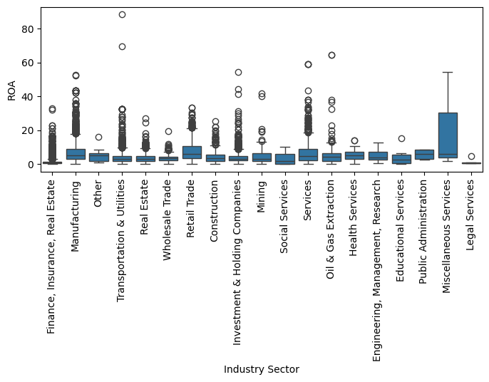
# Create boxplot for Asset column
plt.figure(figsize=(8, 3))
sns.boxplot(x='industry_sector', y='at', data=dt)
plt.xticks(rotation=90)
plt.xlabel('Industry Sector')
plt.ylabel('Asset')Text(0, 0.5, 'Asset')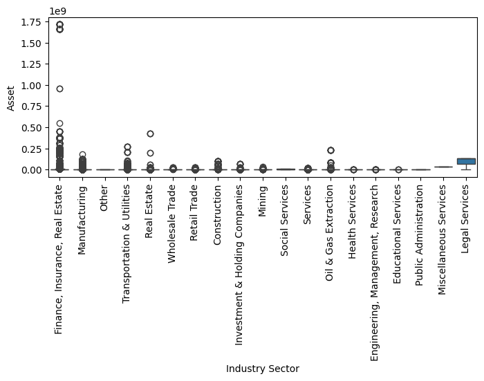
# Create boxplot for leverage column
plt.figure(figsize=(8, 3))
sns.boxplot(x='industry_sector', y='leverage', data=dt)
plt.xticks(rotation=90)
plt.xlabel('Industry Sector')
plt.ylabel('leverage')Text(0, 0.5, 'leverage')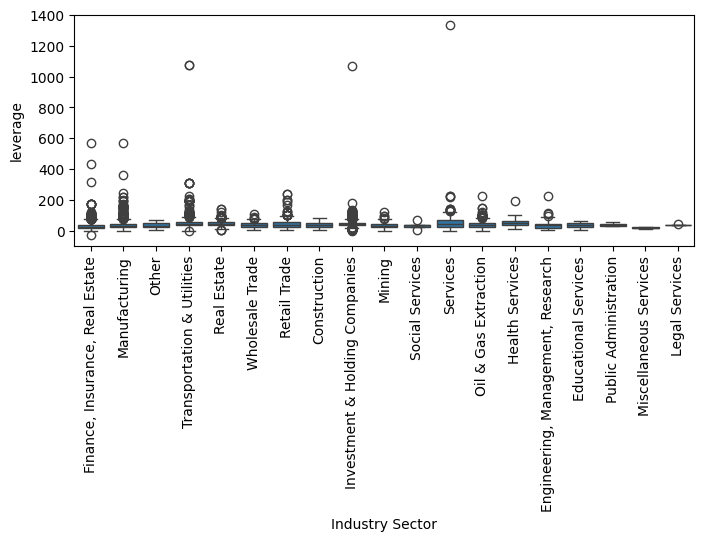
- The boxplots by industry show a large variation in data range and variance across industry sectors. Therefore, it is more reasonable to handle missing values and imputations separately by industry.
col_to_check = ['ROA', 'at', 'leverage']
# Show missing percentage of three variables by industry sector
missing_by_sector = dt.groupby('industry_sector')[col_to_check].apply(lambda x: x.isnull().mean() * 100)
print(missing_by_sector.sort_values(by='ROA', ascending=False)) ROA at leverage
industry_sector
Mining 44.827586 6.034483 9.051724
Oil & Gas Extraction 44.233807 15.955766 8.530806
Miscellaneous Services 40.000000 80.000000 40.000000
Social Services 39.130435 26.086957 34.782609
Health Services 38.461538 23.846154 15.384615
Other 29.787234 25.531915 23.404255
Engineering, Management, Research 29.452055 24.657534 25.342466
Educational Services 28.571429 7.142857 14.285714
Investment & Holding Companies 26.424501 22.435897 20.584046
Transportation & Utilities 24.713805 13.108866 12.368126
Services 24.266145 15.198956 11.545988
Manufacturing 20.440616 16.233228 11.810502
Construction 19.774920 16.237942 12.057878
Retail Trade 18.669778 13.885648 13.535589
Wholesale Trade 16.748768 7.142857 6.403941
Real Estate 16.262295 11.606557 10.950820
Finance, Insurance, Real Estate 14.384197 19.421981 13.204295
Public Administration 0.000000 25.000000 0.000000
Legal Services 0.000000 0.000000 0.000000The results show the percentage of missing values in ROA for each industry sector, along with the total data available per industry:
Missing values for ROA and assets are not randomly distributed across industries.
Mining, Oil & Gas Extraction, Miscellaneous Services, Social Services, and Health Services have over 35-45% missing ROA values, which is quite high.
Some sectors have moderate missing values, meaning industry-level median imputation could be a viable approach to preserve more data.
However, industries with a high percentage of missing values do not represent the majority of the public company dataset. Therefore, dropping these industries alone will not fully resolve the issue. Additional steps are needed.
# Drop columns for industries with high missing values
dt = dt[~dt['industry_sector'].isin(['Mining', 'Oil & Gas Extraction', 'Miscellaneous Services', 'Social Services', 'Health Services'])]Second, for industries with less portion of missing values, I will use imputations.
# 1️Keep Original Variables
dt['ROA_orig'] = dt['ROA']
dt['at_orig'] = dt['at']
dt['leverage_orig'] = dt['leverage']
# Handle Outliers by Industry (Capping at 1.5*IQR)
def cap_outliers_by_group(dt, column, group_col):
"""Cap outliers at 1.5*IQR within each industry sector"""
dt = dt.copy()
def cap_outliers(group):
Q1 = group[column].quantile(0.25)
Q3 = group[column].quantile(0.75)
IQR = Q3 - Q1
lower_bound = Q1 - 1.5 * IQR
upper_bound = Q3 + 1.5 * IQR
return np.clip(group[column], lower_bound, upper_bound)
dt[column] = dt.groupby(group_col, group_keys=False).apply(cap_outliers)
return dt
# Apply outlier treatment to each variable by industry
for var in ['ROA', 'at', 'leverage']:
dt = cap_outliers_by_group(dt, column=var, group_col='industry_sector')
# Create New Variables for Imputation (Preserve Original Values)
dt['ROA_impute'] = dt['ROA']
dt['at_impute'] = dt['at']
dt['leverage_impute'] = dt['leverage']
# Add Missingness Indicators (1 if missing, 0 if not)
for var in ['ROA', 'at', 'leverage']:
dt[f'{var}_missing'] = dt[var].isnull().astype(int)
# Apply Median Imputation by Industry Sector
for var in ['ROA_impute', 'at_impute', 'leverage_impute']:
dt[var] = dt.groupby('industry_sector')[var].transform(lambda x: x.fillna(x.median()))
# Display the final dataframe
dt.head()SettingWithCopyWarning:
A value is trying to be set on a copy of a slice from a DataFrame.
Try using .loc[row_indexer,col_indexer] = value instead
See the caveats in the documentation: https://pandas.pydata.org/pandas-docs/stable/user_guide/indexing.html#returning-a-view-versus-a-copy
dt['ROA_orig'] = dt['ROA']
<ipython-input-26-e4262a647683>:3: SettingWithCopyWarning:
A value is trying to be set on a copy of a slice from a DataFrame.
Try using .loc[row_indexer,col_indexer] = value instead
See the caveats in the documentation: https://pandas.pydata.org/pandas-docs/stable/user_guide/indexing.html#returning-a-view-versus-a-copy
dt['at_orig'] = dt['at']
<ipython-input-26-e4262a647683>:4: SettingWithCopyWarning:
A value is trying to be set on a copy of a slice from a DataFrame.
Try using .loc[row_indexer,col_indexer] = value instead
See the caveats in the documentation: https://pandas.pydata.org/pandas-docs/stable/user_guide/indexing.html#returning-a-view-versus-a-copy
dt['leverage_orig'] = dt['leverage']
<ipython-input-26-e4262a647683>:19: DeprecationWarning: DataFrameGroupBy.apply operated on the grouping columns. This behavior is deprecated, and in a future version of pandas the grouping columns will be excluded from the operation. Either pass `include_groups=False` to exclude the groupings or explicitly select the grouping columns after groupby to silence this warning.
dt[column] = dt.groupby(group_col, group_keys=False).apply(cap_outliers)
<ipython-input-26-e4262a647683>:19: DeprecationWarning: DataFrameGroupBy.apply operated on the grouping columns. This behavior is deprecated, and in a future version of pandas the grouping columns will be excluded from the operation. Either pass `include_groups=False` to exclude the groupings or explicitly select the grouping columns after groupby to silence this warning.
dt[column] = dt.groupby(group_col, group_keys=False).apply(cap_outliers)
<ipython-input-26-e4262a647683>:19: DeprecationWarning: DataFrameGroupBy.apply operated on the grouping columns. This behavior is deprecated, and in a future version of pandas the grouping columns will be excluded from the operation. Either pass `include_groups=False` to exclude the groupings or explicitly select the grouping columns after groupby to silence this warning.
dt[column] = dt.groupby(group_col, group_keys=False).apply(cap_outliers)| Issuer | ISIN | currency | Moody__Rating | country | issuer_group | annc_date | issue_dt | mat_dt | amt | ... | industry_sector | ROA_orig | at_orig | leverage_orig | ROA_impute | at_impute | leverage_impute | ROA_missing | at_missing | leverage_missing | |
|---|---|---|---|---|---|---|---|---|---|---|---|---|---|---|---|---|---|---|---|---|---|
| 18 | Banco Hipotecario SA | ARBHIP5600P1 | ARP | NR | AR | Corporate | 2017-05-02 | 20947 | 22043.0 | 3.574 | ... | Finance, Insurance, Real Estate | 1.43 | 348684.5 | 0.698133 | 1.43 | 348684.5 | 0.698133 | 0 | 0 | 0 |
| 19 | Banco Hipotecario SA | ARBHIP5600T3 | US | NR | AR | Corporate | 2017-08-04 | 21040 | 21770.0 | 7.233 | ... | Finance, Insurance, Real Estate | 2.17 | 348684.5 | 0.916521 | 2.17 | 348684.5 | 0.916521 | 0 | 0 | 0 |
| 25 | Celulosa Argentina SA | ARCELU560066 | US | NR | AR | Corporate | 2016-11-24 | 20793 | 21888.0 | 40.001 | ... | Manufacturing | NaN | 30709.5 | 42.201550 | 5.25 | 30709.5 | 42.201550 | 1 | 0 | 0 |
| 26 | Celulosa Argentina SA | ARCELU5600A2 | US | NR | AR | Corporate | 2019-05-27 | 21704 | 21882.0 | 3.521 | ... | Manufacturing | NaN | 30709.5 | 44.572954 | 5.25 | 30709.5 | 44.572954 | 1 | 0 | 0 |
| 36 | Cresud SA Comercial | ARCRES050298 | US | NR | AR | Corporate | 2014-09-03 | 19978 | 21804.0 | 33.706 | ... | Other | NaN | 338679.0 | 51.535613 | 5.05 | 338679.0 | 51.535613 | 1 | 0 | 0 |
5 rows × 31 columns
dt.describe()| annc_date | issue_dt | mat_dt | amt | yield_issue | coupon | green_flag | ROA | at | moody_21 | ... | investment_grade | ROA_orig | at_orig | leverage_orig | ROA_impute | at_impute | leverage_impute | ROA_missing | at_missing | leverage_missing | |
|---|---|---|---|---|---|---|---|---|---|---|---|---|---|---|---|---|---|---|---|---|---|
| count | 24600 | 24600.000000 | 24600.000000 | 24600.000000 | 24600.000000 | 24600.000000 | 736.0 | 19777.000000 | 2.054700e+04 | 12611.000000 | ... | 24600.000000 | 19777.000000 | 2.054700e+04 | 21440.000000 | 24600.000000 | 2.460000e+04 | 24600.000000 | 24600.000000 | 24600.000000 | 24600.000000 |
| mean | 2017-10-22 21:52:48 | 21121.171504 | 24217.223049 | 465.447874 | 3.252839 | 3.221079 | 1.0 | 3.846357 | 1.230504e+06 | 13.995718 | ... | 0.421707 | 4.130793 | 9.373231e+06 | 40.420838 | 3.750410 | 1.099662e+06 | 38.917201 | 0.196057 | 0.164756 | 0.128455 |
| min | 2013-01-02 00:00:00 | 19362.000000 | 19764.000000 | 0.014000 | 0.001000 | 0.001000 | 1.0 | 0.000000 | 7.000000e-01 | 3.000000 | ... | 0.000000 | 0.000000 | 7.000000e-01 | -27.977354 | 0.000000 | 7.000000e-01 | -21.492384 | 0.000000 | 0.000000 | 0.000000 |
| 25% | 2015-09-09 00:00:00 | 20346.000000 | 22525.000000 | 90.110000 | 1.000000 | 0.999750 | 1.0 | 1.020000 | 3.298200e+04 | 12.000000 | ... | 0.000000 | 1.020000 | 3.298200e+04 | 23.664384 | 1.040000 | 4.313750e+04 | 24.063582 | 0.000000 | 0.000000 | 0.000000 |
| 50% | 2017-12-01 00:00:00 | 21164.000000 | 23634.000000 | 297.585000 | 2.862500 | 2.839500 | 1.0 | 2.670000 | 2.343320e+05 | 14.000000 | ... | 0.000000 | 2.670000 | 2.349507e+05 | 37.320106 | 2.940000 | 2.362883e+05 | 36.868485 | 0.000000 | 0.000000 | 0.000000 |
| 75% | 2020-01-24 00:00:00 | 21945.000000 | 24923.000000 | 625.000000 | 4.625000 | 4.600000 | 1.0 | 5.180000 | 1.212087e+06 | 16.000000 | ... | 1.000000 | 5.480000 | 1.463988e+06 | 52.100030 | 5.250000 | 1.000244e+06 | 49.572181 | 0.000000 | 0.000000 | 0.000000 |
| max | 2021-12-30 00:00:00 | 22645.000000 | 59036.000000 | 15000.000000 | 60.000000 | 60.000000 | 1.0 | 21.105000 | 1.316436e+08 | 21.000000 | ... | 1.000000 | 88.310000 | 1.715256e+09 | 1333.333333 | 21.105000 | 1.316436e+08 | 128.903527 | 1.000000 | 1.000000 | 1.000000 |
| std | NaN | 931.720595 | 2833.725788 | 576.322815 | 2.654750 | 2.644284 | 0.0 | 3.887887 | 2.947930e+06 | 3.476986 | ... | 0.493842 | 4.716144 | 7.654094e+07 | 28.116815 | 3.566161 | 2.715819e+06 | 19.028137 | 0.397020 | 0.370968 | 0.334603 |
8 rows × 22 columns
# Drop observations where leverage is negative
dt = dt[dt['leverage_impute'] >= 0]Third, check the distribution of important variables
# Boxplot for Asset to check the whole distribution
plt.figure(figsize=(8,3))
sns.boxplot(data=dt, x='at_impute')
plt.title('Histogram of Asset')Text(0.5, 1.0, 'Histogram of Asset')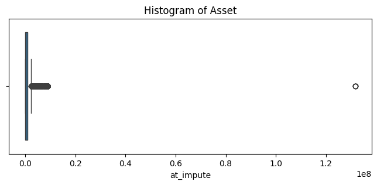
There appears to be an extremely large data point.
# Sort the at_impute descending
dt.sort_values(by='at_impute', ascending=False).head(10)['at_impute']| at_impute | |
|---|---|
| 17490 | 1.316436e+08 |
| 17549 | 1.316436e+08 |
| 17550 | 1.316436e+08 |
| 17491 | 1.316436e+08 |
| 17551 | 1.316436e+08 |
| 17824 | 8.774820e+06 |
| 62396 | 8.774820e+06 |
| 68796 | 8.774820e+06 |
| 24192 | 8.774820e+06 |
| 68776 | 8.774820e+06 |
The first several rows has an extremely large asset amount, therefore, I drop those outliers.
# Drop the largest asset amount which equals to 131643632.5
dt = dt[dt['at_impute'] < 131643632.5]# Boxplot for amount at issuance (amt)
plt.figure(figsize=(8,3))
sns.boxplot(data=dt, x='amt')
plt.title('Histogram of amount at issuance')Text(0.5, 1.0, 'Histogram of amount at issuance')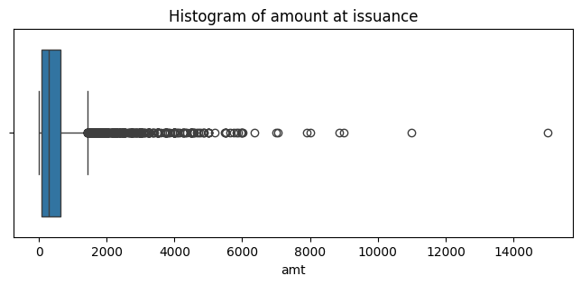
# Create variable 'duration'
# Check data types of matrity date and issue date and change them to datetime format
dt['issue_dt1'] = pd.to_datetime(dt['issue_dt'], origin='1960-01-01', unit='D')
dt['mat_dt1'] = pd.to_datetime(dt['mat_dt'], origin='1960-01-01', unit='D')
# Extrac issue year from issue_dt1
dt['issue_year'] = dt['issue_dt1'].dt.year
# Create duration with the unit year
dt['duration'] = (dt['mat_dt1'] - dt['issue_dt1']).dt.days / 365
dt.head()| Issuer | ISIN | currency | Moody__Rating | country | issuer_group | annc_date | issue_dt | mat_dt | amt | ... | ROA_impute | at_impute | leverage_impute | ROA_missing | at_missing | leverage_missing | issue_dt1 | mat_dt1 | issue_year | duration | |
|---|---|---|---|---|---|---|---|---|---|---|---|---|---|---|---|---|---|---|---|---|---|
| 18 | Banco Hipotecario SA | ARBHIP5600P1 | ARP | NR | AR | Corporate | 2017-05-02 | 20947 | 22043.0 | 3.574 | ... | 1.43 | 348684.5 | 0.698133 | 0 | 0 | 0 | 2017-05-08 | 2020-05-08 | 2017 | 3.002740 |
| 19 | Banco Hipotecario SA | ARBHIP5600T3 | US | NR | AR | Corporate | 2017-08-04 | 21040 | 21770.0 | 7.233 | ... | 2.17 | 348684.5 | 0.916521 | 0 | 0 | 0 | 2017-08-09 | 2019-08-09 | 2017 | 2.000000 |
| 25 | Celulosa Argentina SA | ARCELU560066 | US | NR | AR | Corporate | 2016-11-24 | 20793 | 21888.0 | 40.001 | ... | 5.25 | 30709.5 | 42.201550 | 1 | 0 | 0 | 2016-12-05 | 2019-12-05 | 2016 | 3.000000 |
| 26 | Celulosa Argentina SA | ARCELU5600A2 | US | NR | AR | Corporate | 2019-05-27 | 21704 | 21882.0 | 3.521 | ... | 5.25 | 30709.5 | 44.572954 | 1 | 0 | 0 | 2019-06-04 | 2019-11-29 | 2019 | 0.487671 |
| 36 | Cresud SA Comercial | ARCRES050298 | US | NR | AR | Corporate | 2014-09-03 | 19978 | 21804.0 | 33.706 | ... | 5.05 | 338679.0 | 51.535613 | 1 | 0 | 0 | 2014-09-12 | 2019-09-12 | 2014 | 5.002740 |
5 rows × 35 columns
# Plot duration
plt.figure(figsize=(8,3))
sns.boxplot(data=dt, x='duration')
plt.title('Histogram of duration')Text(0.5, 1.0, 'Histogram of duration')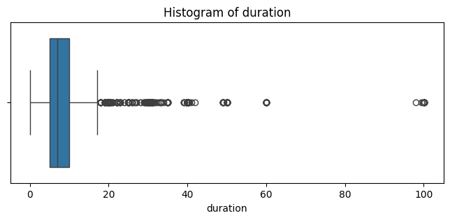
# Sort duration in descending order
dt.sort_values(by='duration', ascending=False).head(10)['duration']| duration | |
|---|---|
| 34950 | 100.076712 |
| 59447 | 100.073973 |
| 13681 | 100.065753 |
| 27479 | 100.065753 |
| 27501 | 100.065753 |
| 24967 | 100.065753 |
| 64750 | 100.065753 |
| 27492 | 100.063014 |
| 24973 | 99.865753 |
| 25058 | 99.443836 |
# Check industry sectors for bonds with duration more than 50 years.
dt[dt['duration'] > 50]['industry_sector'].value_counts()| count | |
|---|---|
| industry_sector | |
| Transportation & Utilities | 41 |
| Manufacturing | 6 |
| Real Estate | 4 |
| Construction | 2 |
| Investment & Holding Companies | 1 |
| Services | 1 |
- Observing that the duration variable also contains some very large values, I initially found durations over 50 years to be quite long. However, after verifying the information for these long-duration bonds, I confirmed that they do exist and that the data is correct.
- Further exploration reveals that most of these bonds come from industries requiring long-term capital investments, such as infrastructure, utilities, energy. Companies in these sectors may issue ultra-long bonds to align their financing with the long lifespans of their assets.
- Therefore, I will retain these large values without imputation.
# Check distribution of yield_issue
plt.figure(figsize=(8,3))
sns.boxplot(data=dt, x='yield_issue')
plt.title('Histogram of yield_issue')Text(0.5, 1.0, 'Histogram of yield_issue')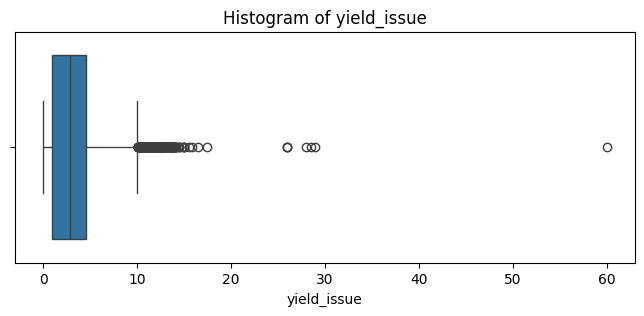
# Sort yield at issuance in descending order to check the highest values
print(dt.sort_values(by='yield_issue', ascending=False).head(10).to_string()) Issuer ISIN currency Moody__Rating country issuer_group annc_date issue_dt mat_dt amt yield_issue coupon green_flag ROA at Status moody_21 sic leverage investment_grade sic_str industry_sector ROA_orig at_orig leverage_orig ROA_impute at_impute leverage_impute ROA_missing at_missing leverage_missing issue_dt1 mat_dt1 issue_year duration
54 Angel Estrada Y Cia SA ARESTR590096 ARP NR AR Corporate 2018-12-11 21535 21715.0 1.690 60.000 60.000 NaN NaN 3574.20 Public NaN 2621.0 43.653251 0 2621.0 Manufacturing NaN 3574.2 43.653251 5.250 3574.20 43.653251 1 0 0 2018-12-17 2019-06-15 2018 0.493151
136 TGLT SA ARTGLT560019 ARP NR AR Corporate 2015-05-05 20220 20580.0 8.727 29.000 29.000 NaN NaN 19128.70 Public NaN 6552.0 12.124552 0 6552.0 Real Estate NaN 19128.7 12.124552 2.910 19128.70 12.124552 1 0 0 2015-05-12 2016-05-06 2015 0.986301
110 Pampa Energia SA ARPEPA590068 ARP NR AR Corporate 2015-04-28 20208 20568.0 15.389 28.500 28.500 NaN 8.920 387978.00 Public NaN 4911.0 26.388005 0 4911.0 Transportation & Utilities 8.92 387978.0 26.388005 8.920 387978.00 26.388005 0 0 0 2015-04-30 2016-04-24 2015 0.986301
109 Pampa Energia SA ARPEPA590019 ARP NR AR Corporate 2015-02-24 20145 20505.0 10.321 28.000 28.000 NaN 9.690 387978.00 Public NaN 4911.0 28.652751 0 4911.0 Transportation & Utilities 11.53 387978.0 28.652751 9.690 387978.00 28.652751 0 0 0 2015-02-26 2016-02-21 2015 0.986301
53 Angel Estrada Y Cia SA ARESTR590039 ARP NR AR Corporate 2016-06-09 20627 20989.0 3.219 26.000 26.000 NaN 7.810 3574.20 Public NaN 2621.0 41.309824 0 2621.0 Manufacturing 7.81 3574.2 41.309824 7.810 3574.20 41.309824 0 0 0 2016-06-22 2017-06-19 2016 0.991781
63 Banco de Galicia,Buenos Aires ARGALI5602T2 ARP NR AR Corporate 2018-04-24 21300 22031.0 207.815 25.980 25.980 NaN 1.890 1477466.30 Public NaN 6000.0 10.935829 0 6000.0 Finance, Insurance, Real Estate 1.89 1477466.3 10.935829 1.890 1477466.30 10.935829 0 0 0 2018-04-26 2020-04-26 2018 2.002740
33666 Banco Hipotecario SA US05961AAG85 ARP B3 AR Corporate 2017-11-01 21130 22956.0 358.218 25.938 25.938 NaN 2.670 348684.50 Public 6.0 6000.0 0.832502 0 6000.0 Finance, Insurance, Real Estate 2.67 348684.5 0.832502 2.670 348684.50 0.832502 0 0 0 2017-11-07 2022-11-07 2017 5.002740
33669 Banco Macro SA US05963GAJ76 ARP B3 AR Corporate 2017-05-03 20947 22773.0 302.670 17.500 17.500 NaN 3.045 997653.50 Public 6.0 6000.0 8.231343 0 6000.0 Finance, Insurance, Real Estate 3.94 997653.5 8.231343 3.045 997653.50 8.231343 0 0 0 2017-05-08 2022-05-08 2017 5.002740
64640 YPF SA US984245AP50 ARP NR AR Corporate 2017-05-04 20948 22774.0 300.597 16.500 16.500 NaN NaN 1242393.75 Public NaN 2911.0 36.899814 0 2911.0 Manufacturing NaN 2388147.0 36.899814 5.250 1242393.75 36.899814 1 0 0 2017-05-09 2022-05-09 2017 5.002740
1171 Marfrig Alimentos SA BRMRFGDBS028 BR NR BR Corporate 2013-04-15 19439 21571.0 284.986 15.850 15.850 NaN NaN 47118.20 Public NaN 2013.0 41.958907 0 2013.0 Manufacturing NaN 47118.2 41.958907 5.250 47118.20 41.958907 1 0 0 2013-03-22 2019-01-22 2013 5.841096# Count bonds numbers by industry where yield issue > 10
dt[dt['yield_issue'] > 10]['country'].value_counts()[:5]| count | |
|---|---|
| country | |
| CH | 99 |
| ID | 70 |
| IN | 43 |
| HK | 37 |
| US | 33 |
# Count bonds numbers by year where yield issue > 10
dt[dt['yield_issue'] > 10]['issue_year'].value_counts()[:5]| count | |
|---|---|
| issue_year | |
| 2019 | 84 |
| 2020 | 57 |
| 2015 | 48 |
| 2014 | 45 |
| 2018 | 40 |
- Corporate bond yield over 10% is possible, but a corporate bond yielding over 20% is a major red flag unless there’s a clear reason. Therefore, I drop observations with yield at issuance higher then 15%.
# Drop observations where yield at issurance is higher than 15%.
dt = dt[dt['yield_issue'] < 15]# Check distribution of amount at issuance
plt.figure(figsize=(8,3))
sns.boxplot(data=dt, x='amt')
plt.title('Histogram of amount at issuance')Text(0.5, 1.0, 'Histogram of amount at issuance')# Sort amount at issuance at decending order and show the first 10 lines
print(dt.sort_values(by='amt', ascending=False).head(10).to_string()) Issuer ISIN currency Moody__Rating country issuer_group annc_date issue_dt mat_dt amt yield_issue coupon green_flag ROA at Status moody_21 sic leverage investment_grade sic_str industry_sector ROA_orig at_orig leverage_orig ROA_impute at_impute leverage_impute ROA_missing at_missing leverage_missing issue_dt1 mat_dt1 issue_year duration
63903 Verizon Communications Inc US92343VBT08 US Baa1 US Corporate 2013-09-11 19619 30573.0 15000.000 6.559 6.550 NaN 0.99 366596.000 Public 14.0 4813.0 44.388527 1 4813.0 Transportation & Utilities 0.99 366596.0 44.388527 0.99 366596.000 44.388527 0 0 0 2013-09-18 2043-09-15 2013 30.010959
63901 Verizon Communications Inc US92343VBR42 US Baa1 US Corporate 2013-09-11 19619 23268.0 11000.000 5.192 5.150 NaN 0.99 366596.000 Public 14.0 4813.0 44.388527 1 4813.0 Transportation & Utilities 0.99 366596.0 44.388527 0.99 366596.000 44.388527 0 0 0 2013-09-18 2023-09-15 2013 9.997260
34816 CVS Health Corp US126650CX62 US Baa1 US Corporate 2018-03-06 21252 24921.0 9000.000 4.475 4.300 NaN 5.43 232999.000 Public 14.0 5912.0 68.425645 1 5912.0 Retail Trade 5.43 232999.0 68.425645 5.43 232999.000 68.425645 0 0 0 2018-03-09 2028-03-25 2018 10.052055
10593 Bank Of China Ltd CND10003NYX8 CY NR CH Corporate 2020-09-17 22179 25831.0 8872.065 4.200 4.200 NaN 0.75 8774820.125 Public NaN 6000.0 19.828023 0 6000.0 Finance, Insurance, Real Estate 0.75 26671236.0 19.828023 0.75 8774820.125 19.828023 0 0 0 2020-09-21 2030-09-21 2020 10.005479
34818 CVS Health Corp US126650CZ11 US Baa1 US Corporate 2018-03-06 21252 32226.0 8000.000 5.087 5.050 NaN 5.43 232999.000 Public 14.0 5912.0 68.425645 1 5912.0 Retail Trade 5.43 232999.0 68.425645 5.43 232999.000 68.425645 0 0 0 2018-03-09 2048-03-25 2018 30.065753
68492 Emirates NBD Bank PJSC XS1253371634 STG Baa1 UA Corporate 2015-06-22 20268 20634.0 7908.000 1.180 1.180 NaN 1.58 686507.500 Public 14.0 6000.0 16.815860 1 6000.0 Finance, Insurance, Real Estate 1.58 686507.5 16.815860 1.58 686507.500 16.815860 0 0 0 2015-06-29 2016-06-29 2015 1.002740
10243 Shanghai Pudong Dvlp Bk CND1000344P1 CY NR CH Corporate 2020-04-24 22034 23129.0 7060.850 2.080 2.080 NaN 0.87 8077795.000 Public NaN 6000.0 46.267449 0 6000.0 Finance, Insurance, Real Estate 0.87 8077795.0 46.267449 0.87 8077795.000 46.267449 0 0 0 2020-04-29 2023-04-29 2020 3.000000
62646 T-Mobile US Inc US87264ABE47 US Baa3 US Corporate 2020-04-02 22014 25672.0 7000.000 3.963 3.875 NaN 3.08 206563.000 Public 12.0 4812.0 91.451589 1 4812.0 Transportation & Utilities 3.08 206563.0 95.837250 3.08 206563.000 91.451589 0 0 0 2020-04-09 2030-04-15 2020 10.021918
5625 Agricultural Bank of China Ltd CND100010FS7 CY NR CH Corporate 2018-04-20 21301 24954.0 6354.760 4.450 4.450 NaN 0.88 8774820.125 Public NaN 6000.0 11.232428 0 6000.0 Finance, Insurance, Real Estate 0.88 28926128.0 11.232428 0.88 8774820.125 11.232428 0 0 0 2018-04-27 2028-04-27 2018 10.008219
3460 China CITIC Bank Corp Ltd CND100007ZY9 CY NR CH Corporate 2014-08-22 19961 23614.0 6015.275 6.130 6.130 NaN 0.95 7995979.000 Public NaN 6000.0 19.476015 0 6000.0 Finance, Insurance, Real Estate 0.95 7995979.0 19.476015 0.95 7995979.000 19.476015 0 0 0 2014-08-26 2024-08-26 2014 10.008219# Count by industry for amount at issuance over $2 billion.
dt[dt['amt'] > 2000]['industry_sector'].value_counts()[:5]| count | |
|---|---|
| industry_sector | |
| Finance, Insurance, Real Estate | 164 |
| Manufacturing | 122 |
| Transportation & Utilities | 95 |
| Services | 53 |
| Retail Trade | 16 |
- The dataset contains some large issuance amounts, such as $15 billion from Verizon (ISIN: US92343VBT08) and $9 billion from CVS (ISIN: US126650CX62). These initially appear to be extreme values; however, a double-check confirms that these figures are accurate.
- Companies in sectors like infrastructure, telecom, energy, and manufacturing require substantial funds for projects such as building factories, power plants, or nationwide networks.
- Financial institutions (e.g., banks and insurance companies) frequently raise large sums of debt for lending, investment, and regulatory capital requirements; Real estate firms issue bonds to finance large-scale property developments and acquisitions.
- I retain these extreme values since they are valid and reflect real-world financial transactions.
4. Descriptive Statistics & Visualizations
# Drop columes for future analysis
dt.drop(columns=['issuer_group', 'issue_dt', 'mat_dt', 'sic','Status', 'ROA_orig', 'at_orig', 'leverage_orig'], inplace=True)# Take the log for amount at issuance and asset
dt['amt_log'] = np.log(dt['amt'])
dt['at_log'] = np.log(dt['at_impute'])# Print out the first several lines
print(dt.head(10).to_string()) Issuer ISIN currency Moody__Rating country annc_date amt yield_issue coupon green_flag ROA at moody_21 leverage investment_grade sic_str industry_sector ROA_impute at_impute leverage_impute ROA_missing at_missing leverage_missing issue_dt1 mat_dt1 issue_year duration amt_log at_log
18 Banco Hipotecario SA ARBHIP5600P1 ARP NR AR 2017-05-02 3.574 2.750 2.75 NaN 1.43 348684.5 NaN 0.698133 0 6000.0 Finance, Insurance, Real Estate 1.43 348684.5 0.698133 0 0 0 2017-05-08 2020-05-08 2017 3.002740 1.273685 12.761923
19 Banco Hipotecario SA ARBHIP5600T3 US NR AR 2017-08-04 7.233 4.000 4.00 NaN 2.17 348684.5 NaN 0.916521 0 6000.0 Finance, Insurance, Real Estate 2.17 348684.5 0.916521 0 0 0 2017-08-09 2019-08-09 2017 2.000000 1.978654 12.761923
25 Celulosa Argentina SA ARCELU560066 US NR AR 2016-11-24 40.001 9.500 9.50 NaN NaN 30709.5 NaN 42.201550 0 2672.0 Manufacturing 5.25 30709.5 42.201550 1 0 0 2016-12-05 2019-12-05 2016 3.000000 3.688904 10.332327
26 Celulosa Argentina SA ARCELU5600A2 US NR AR 2019-05-27 3.521 10.000 10.00 NaN NaN 30709.5 NaN 44.572954 0 2672.0 Manufacturing 5.25 30709.5 44.572954 1 0 0 2019-06-04 2019-11-29 2019 0.487671 1.258745 10.332327
36 Cresud SA Comercial ARCRES050298 US NR AR 2014-09-03 33.706 3.521 4.00 NaN NaN 338679.0 NaN 51.535613 0 191.0 Other 5.05 338679.0 51.535613 1 0 0 2014-09-12 2019-09-12 2014 5.002740 3.517676 12.732808
37 Cresud SA Comercial ARCRES560023 US NR AR 2015-03-05 18.207 2.500 2.50 NaN NaN 338679.0 NaN 55.764820 0 191.0 Other 5.05 338679.0 55.764820 1 0 0 2015-03-13 2017-03-13 2015 2.002740 2.901806 12.732808
38 Cresud SA Comercial ARCRES560049 US NR AR 2015-08-12 22.699 4.000 4.00 NaN NaN 338679.0 NaN 56.143070 0 191.0 Other 5.05 338679.0 56.143070 1 0 0 2015-08-12 2019-08-12 2015 4.002740 3.122321 12.732808
40 Cresud SA Comercial ARCRES560080 US NR AR 2019-07-04 59.562 9.000 9.00 NaN NaN 338679.0 NaN NaN 0 191.0 Other 5.05 338679.0 32.769090 1 0 1 2019-07-11 2021-07-11 2019 2.002740 4.087018 12.732808
41 Pampa Energia SA ARCTGU560058 US NR AR 2016-08-10 1.388 7.000 7.00 NaN 3.16 387978.0 NaN 80.386653 0 4911.0 Transportation & Utilities 3.16 387978.0 80.386653 0 0 0 2016-08-12 2020-08-12 2016 4.002740 0.327864 12.868704
55 Angel Estrada Y Cia SA ARESTR5900A1 US NR AR 2018-12-10 2.096 7.000 7.00 NaN NaN 3574.2 NaN 43.653251 0 2621.0 Manufacturing 5.25 3574.2 43.653251 1 0 0 2018-12-17 2019-06-15 2018 0.493151 0.740031 8.181497# Plot the histogram for amount at issuance and the log amount of issuance.
plt.figure(figsize=(12,3))
plt.subplot(1,2,1)
sns.histplot(data=dt, x='amt', kde=True)
plt.xlabel('Amount at issuance ($m)')
plt.subplot(1,2,2)
sns.histplot(data=dt, x='amt_log', kde=True)
plt.xlabel('Log of Amount at issuance')
plt.tight_layout
plt.show()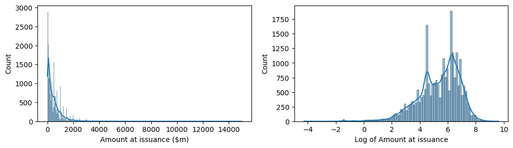
- The original amount at issuance variable is highly right-skewed, meaning it has extreme values that could disproportionately affect regression results.
- The log transformation reduces skewness, making the distribution more normal-like, which is a key assumption in linear regression.
# Plot the histogram for amount at issuance and the log amount of issuance.
plt.figure(figsize=(12,3))
plt.subplot(1,2,1)
sns.histplot(data=dt, x='at_impute', kde=True)
# Add axis name
plt.xlabel('Asset ($m)')
plt.subplot(1,2,2)
sns.histplot(data=dt, x='at_log', kde=True)
plt.xlabel('Log of Asset')
plt.tight_layout
plt.show()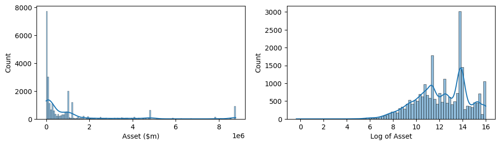
- Like the amount at issuance variable, the original asset variable is highly right-skewed, while the log transformation reduces skewness.
# Create a dummy greenid based on green_flag
dt['greenid'] = dt['green_flag'].apply(lambda x: 1 if x == 1 else 0)
dt['greenid'].value_counts()
# Drop green_flag
dt.drop(columns=['green_flag'], inplace=True)# Cound bond numbers by year and greenid
dt.groupby(['issue_year', 'greenid']).size().unstack()| greenid | 0 | 1 |
|---|---|---|
| issue_year | ||
| 2013 | 2167 | 4 |
| 2014 | 2299 | 9 |
| 2015 | 2291 | 30 |
| 2016 | 2683 | 29 |
| 2017 | 2851 | 49 |
| 2018 | 2580 | 67 |
| 2019 | 3004 | 130 |
| 2020 | 3158 | 170 |
| 2021 | 2812 | 247 |
The trend of green bond issuance mainly started after 2015 Paris Climate Agreement. There were few before that.
# Count bond issurance by industry and greenid
dt.groupby(['industry_sector', 'greenid']).size().unstack()| greenid | 0 | 1 |
|---|---|---|
| industry_sector | ||
| Construction | 602.0 | 20.0 |
| Educational Services | 14.0 | NaN |
| Engineering, Management, Research | 140.0 | 6.0 |
| Finance, Insurance, Real Estate | 7355.0 | 182.0 |
| Investment & Holding Companies | 1247.0 | 156.0 |
| Legal Services | 2.0 | NaN |
| Manufacturing | 5942.0 | 91.0 |
| Other | 47.0 | NaN |
| Public Administration | 2.0 | 2.0 |
| Real Estate | 1425.0 | 98.0 |
| Retail Trade | 853.0 | 4.0 |
| Services | 1525.0 | 8.0 |
| Transportation & Utilities | 4290.0 | 163.0 |
| Wholesale Trade | 401.0 | 5.0 |
# Count bond issurance by currency and sort
dt.groupby(['currency']).size().sort_values(ascending=False)[:10]| 0 | |
|---|---|
| currency | |
| US | 9392 |
| Y | 4065 |
| EUR | 3721 |
| CY | 1157 |
| RE | 1045 |
| BA | 918 |
| SFR | 613 |
| TW | 551 |
| RH | 522 |
| RG | 437 |
# Count bond issurance by country
dt.groupby(['country']).size().sort_values(ascending=False)[:10]| 0 | |
|---|---|
| country | |
| US | 7550 |
| JP | 4017 |
| CH | 1456 |
| IN | 1094 |
| FR | 1019 |
| TH | 913 |
| WG | 796 |
| AU | 635 |
| CA | 623 |
| UK | 592 |
# Columns for statistical description
col_for_stat =['yield_issue', 'coupon', 'duration', 'moody_21', 'amt', 'at', 'ROA', 'leverage', 'at_impute', 'ROA_impute', 'leverage_impute']
# Display statistical description, and don't written in scientific notation
pd.options.display.float_format = '{:.2f}'.format
dt[col_for_stat].describe()| yield_issue | coupon | duration | moody_21 | amt | at | ROA | leverage | at_impute | ROA_impute | leverage_impute | |
|---|---|---|---|---|---|---|---|---|---|---|---|
| count | 24580.00 | 24580.00 | 24580.00 | 12608.00 | 24580.00 | 20528.00 | 19761.00 | 21420.00 | 24580.00 | 24580.00 | 24580.00 |
| mean | 3.24 | 3.21 | 8.49 | 14.00 | 465.75 | 1199245.74 | 3.85 | 39.35 | 1073459.60 | 3.75 | 38.93 |
| std | 2.59 | 2.58 | 7.33 | 3.48 | 576.45 | 2134028.55 | 3.89 | 20.04 | 1978360.03 | 3.57 | 19.03 |
| min | 0.00 | 0.00 | 0.08 | 3.00 | 0.01 | 0.70 | 0.00 | 0.03 | 0.70 | 0.00 | 0.03 |
| 25% | 1.00 | 0.99 | 5.00 | 12.00 | 90.19 | 32954.25 | 1.02 | 23.67 | 43137.50 | 1.04 | 24.06 |
| 50% | 2.86 | 2.82 | 7.00 | 14.00 | 298.36 | 233876.00 | 2.67 | 37.33 | 235723.00 | 2.94 | 36.87 |
| 75% | 4.62 | 4.60 | 10.01 | 16.00 | 625.00 | 1212087.00 | 5.18 | 52.11 | 1000244.30 | 5.25 | 49.60 |
| max | 14.79 | 14.50 | 100.08 | 21.00 | 15000.00 | 8774820.12 | 21.10 | 128.90 | 8774820.12 | 21.10 | 128.90 |
# Display statistical results for common bonds
dt[dt['greenid'] == 0][col_for_stat].describe()| yield_issue | coupon | duration | moody_21 | amt | at | ROA | leverage | at_impute | ROA_impute | leverage_impute | |
|---|---|---|---|---|---|---|---|---|---|---|---|
| count | 23845.00 | 23845.00 | 23845.00 | 12309.00 | 23845.00 | 19991.00 | 19209.00 | 20828.00 | 23845.00 | 23845.00 | 23845.00 |
| mean | 3.27 | 3.24 | 8.52 | 14.00 | 468.25 | 1200329.90 | 3.87 | 39.37 | 1077150.46 | 3.77 | 38.92 |
| std | 2.60 | 2.59 | 7.40 | 3.48 | 578.90 | 2134693.07 | 3.91 | 20.13 | 1982210.27 | 3.59 | 19.13 |
| min | 0.00 | 0.00 | 0.08 | 3.00 | 0.01 | 0.70 | 0.00 | 0.03 | 0.70 | 0.00 | 0.03 |
| 25% | 1.00 | 1.00 | 5.00 | 12.00 | 90.58 | 32507.35 | 1.02 | 23.62 | 42909.50 | 1.05 | 24.06 |
| 50% | 2.91 | 2.88 | 7.00 | 14.00 | 300.00 | 231306.00 | 2.67 | 37.27 | 232999.00 | 2.94 | 36.73 |
| 75% | 4.65 | 4.62 | 10.01 | 16.00 | 642.70 | 1212087.00 | 5.22 | 52.24 | 1000244.30 | 5.25 | 49.72 |
| max | 14.79 | 14.50 | 100.08 | 21.00 | 15000.00 | 8774820.12 | 21.10 | 128.90 | 8774820.12 | 21.10 | 128.90 |
Notice there are 700 green bonds vs. 24,000 common bonds, which can lead to biased results since the model may be overly influenced by common bonds.
Considering the unbalance, balanced sample matching may help ensure that green and common bonds are compared under similar conditions, reducing biases. I will talk about this in the next section while deciding models.
# Display statistical results for green bonds
dt[dt['greenid'] == 1][col_for_stat].describe()| yield_issue | coupon | duration | moody_21 | amt | at | ROA | leverage | at_impute | ROA_impute | leverage_impute | |
|---|---|---|---|---|---|---|---|---|---|---|---|
| count | 735.00 | 735.00 | 735.00 | 299.00 | 735.00 | 537.00 | 552.00 | 592.00 | 735.00 | 735.00 | 735.00 |
| mean | 2.14 | 2.07 | 7.32 | 13.90 | 384.51 | 1158885.53 | 3.00 | 38.60 | 953720.00 | 2.99 | 39.13 |
| std | 2.25 | 2.17 | 4.48 | 3.07 | 483.57 | 2110712.43 | 2.88 | 16.22 | 1846367.07 | 2.55 | 15.09 |
| min | 0.01 | 0.01 | 0.49 | 6.00 | 2.80 | 692.10 | 0.00 | 3.35 | 692.10 | 0.00 | 3.35 |
| 25% | 0.51 | 0.50 | 5.00 | 13.00 | 59.75 | 80633.00 | 0.86 | 26.36 | 82911.20 | 1.00 | 27.12 |
| 50% | 1.50 | 1.45 | 6.12 | 14.00 | 200.00 | 348771.30 | 2.41 | 38.74 | 267129.30 | 2.91 | 41.05 |
| 75% | 3.00 | 2.99 | 10.01 | 16.00 | 579.28 | 1000244.30 | 3.78 | 48.09 | 1000244.30 | 3.43 | 46.79 |
| max | 13.00 | 13.00 | 35.02 | 21.00 | 4319.79 | 8774820.12 | 18.06 | 91.45 | 8774820.12 | 18.06 | 91.45 |
# Create scatterplots among variables
plt.figure(figsize=(12, 12))
# Create a pairplot to visualize pairwise relationships between variables in the data
sns.pairplot(dt[['yield_issue', 'duration', 'moody_21', 'amt_log', 'at_log', 'ROA_impute', 'leverage_impute']],
plot_kws={'alpha':0.4, 'size':5},
);<Figure size 1200x1200 with 0 Axes>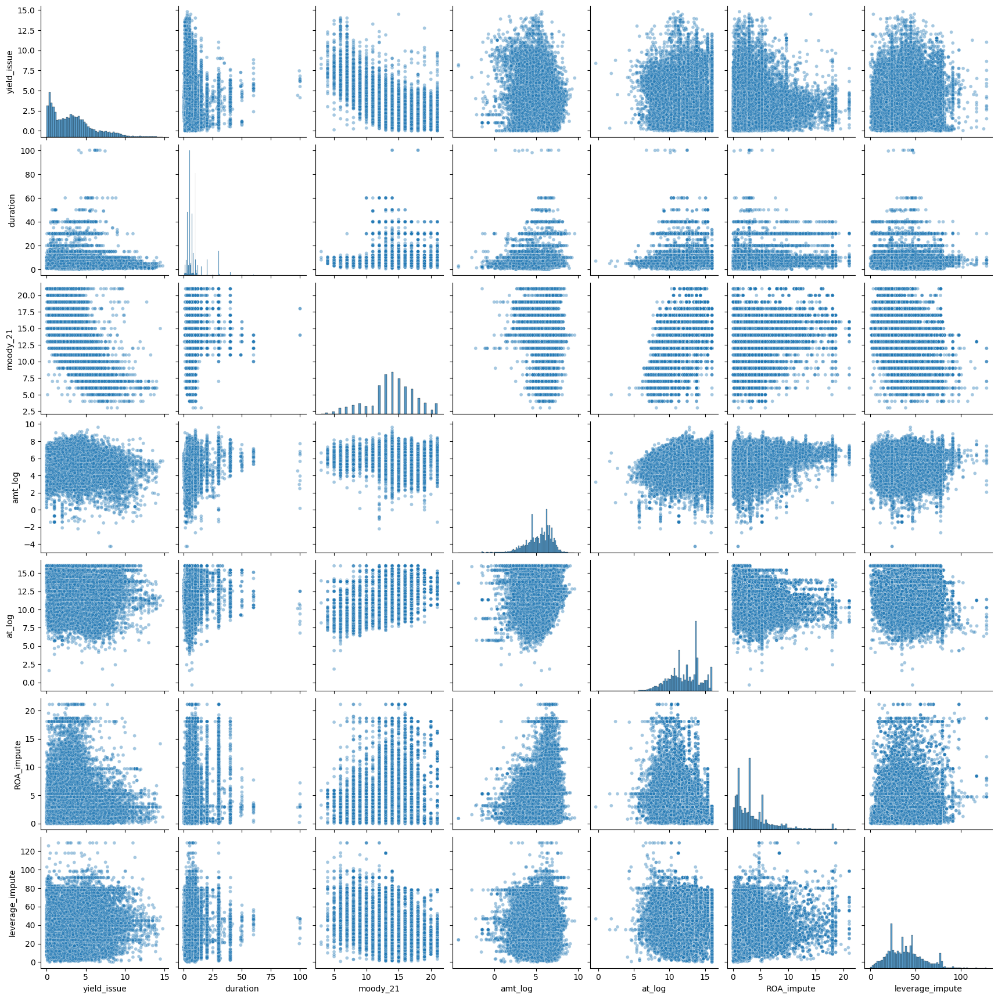
- The scatterplots show no clear linear trend (e.g., no upward or downward patterns), a simple OLS regression might not perform well.
- Next, compute correlation coefficients (Pearson) to quantify relationships.
# Create correlation heatmap
df_heatmap = dt[['yield_issue', 'duration', 'moody_21', 'amt_log', 'at_log', 'ROA_impute', 'leverage_impute']]
plt.figure(figsize=(6,4))
sns.heatmap(df_heatmap.corr(method='pearson'), annot=True, cmap='Reds')
plt.title('Correlation heatmap',
fontsize=12)
plt.show()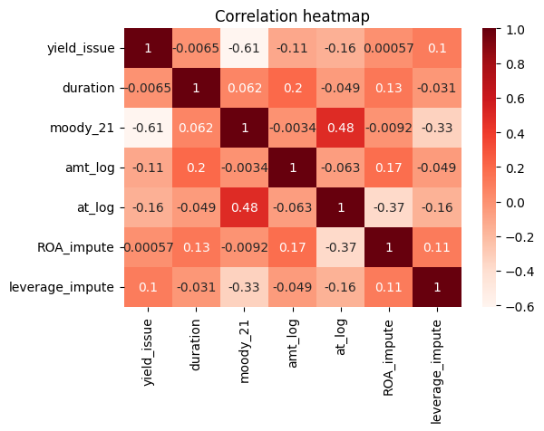
Key Takeaways So Far: - Weak Linear Relationships: The scatterplots and correlation heatmap suggest that most independent variables have weak correlations with yield_issue, except for moody_21 (-0.61), indicating that credit rating is the strongest predictor of bond yield.
Potential Multicollinearity: moody_21 and at_log show moderate correlation (0.48), which may lead to multicollinearity issues. Further VIF analysis is needed to confirm if this affects model stability.
Challenges for OLS Regression: Given the lack of strong linear relationships, an OLS model may have low explanatory power.
Machine Learning: PSM & kNN
- One of the primary challenges in comparing green bonds with regular bonds is the significant size imbalance between the two groups. In my dataset, the number of regular bonds is substantially larger than the number of green bonds. This imbalance can introduce bias and affect the reliability of any comparative analysis.
- To address this issue, I employ Propensity Score Matching (PSM) and Nearest Neighbor Matching (NNM) to create a balanced dataset, ensuring that green bonds are matched with comparable regular bonds.
1. Propensity Score Match
I plan to use Propensity Score Matching (PSM) to create a matched common bond sample. PSM is a method that estimates the likelihood of a bond being green based on certain characteristics (like credit rating, issuance amount, and financial metrics) and then pairs each green bond with a common bond that has a similar likelihood.
In other words, it’s like finding a fair comparison partner for each green bond—similar to making sure you’re comparing two athletes with similar training levels before judging their race times. This way, we ensure that differences in bond prices are not just due to factors like company size or credit rating but are actually related to whether the bond is green or not.
Following PSM, Nearest Neighbor Matching (NNM) further refines the matching process by selecting the closest regular bond for each green bond. This approach enhances the comparability of the matched pairs, ensuring that the bonds are as similar as possible except for the green label, thereby reducing bias in the treatment effect estimation.
# Step 1: One-Hot Encode 'country' and 'industry_sector'
data_dummy = pd.get_dummies(dt[['country', 'industry_sector']], drop_first=True)
# Concatenate the dummy variables with the original DataFrame
data_encoded = pd.concat([dt, data_dummy], axis=1)
# Step 2: Define Features for Propensity Score Estimation (Exclude Outcome Variables)
features = ['duration', 'coupon', 'amt_log', 'at_log', 'ROA_impute', 'leverage_impute'] # Main features
# Add encoded categorical variables (one-hot encoded 'country' & 'industry_sector')
features += [col for col in data_encoded.columns if col.startswith(('country_', 'industry_sector_'))]
# Ensure all features are numerical and free of NaN values
X = data_encoded[features]
y = data_encoded['greenid']
# Step 3: Scale the Features
scaler = StandardScaler()
X_scaled = scaler.fit_transform(X)
# Step 4: Estimate Propensity Scores Using Logistic Regression
log_reg = LogisticRegression(max_iter=10000) # Ensure convergence
log_reg.fit(X_scaled, y)
propensity_scores = log_reg.predict_proba(X_scaled)[:, 1]
# Add propensity scores to the dataset
data_encoded['propensity_score'] = propensity_scores
# Step 5: Perform 1-to-1 Matching Within Each Currency Group
matched_samples = []
for currency in data_encoded['currency'].unique(): # Ensuring bonds are matched within the same currency
data_currency = data_encoded[data_encoded['currency'] == currency] # Filter by currency
# Ensure both green and common bonds exist in the currency group
if data_currency['greenid'].nunique() < 2:
print(f"Skipping {currency} due to missing green/common bonds.")
continue
# Split into green and common bonds
green_bonds = data_currency[data_currency['greenid'] == 1]
common_bonds = data_currency[data_currency['greenid'] == 0]
# Perform Nearest Neighbor Matching (n=1 for 1-to-1 matching)
nn = NearestNeighbors(n_neighbors=1, metric='manhattan') # By default
nn.fit(common_bonds[['propensity_score']]) # Fit common bonds
distances, indices = nn.kneighbors(green_bonds[['propensity_score']]) # Find closest match
# Retrieve matched green and common bonds
matched_common_bonds = common_bonds.iloc[indices.flatten()].reset_index(drop=True)
matched_green_bonds = green_bonds.reset_index(drop=True)
matched_data = pd.concat([matched_green_bonds, matched_common_bonds])
matched_samples.append(matched_data)
# Step 6: Combine Matched Data
if matched_samples:
matched_df = pd.concat(matched_samples).reset_index(drop=True)
matched_df.to_csv("matched_bond_dataset_n1.csv", index=False)
print("Matching complete. Matched dataset saved as 'matched_bond_dataset_n1.csv'.")
else:
print("No matched samples found. Adjust parameters or check dataset.")Skipping ARP due to missing green/common bonds.
Skipping LEV due to missing green/common bonds.
Skipping C due to missing green/common bonds.
Skipping CE due to missing green/common bonds.
Skipping UF due to missing green/common bonds.
Skipping CP due to missing green/common bonds.
Skipping DKR due to missing green/common bonds.
Skipping RL due to missing green/common bonds.
Skipping HF due to missing green/common bonds.
Skipping MP due to missing green/common bonds.
Skipping RH due to missing green/common bonds.
Skipping KD due to missing green/common bonds.
Skipping KZT due to missing green/common bonds.
Skipping SLR due to missing green/common bonds.
Skipping RG due to missing green/common bonds.
Skipping PS due to missing green/common bonds.
Skipping PP due to missing green/common bonds.
Skipping PZ due to missing green/common bonds.
Skipping RR due to missing green/common bonds.
Skipping TL due to missing green/common bonds.
Skipping VTD due to missing green/common bonds.
Skipping SAR due to missing green/common bonds.
Matching complete. Matched dataset saved as 'matched_bond_dataset_n1.csv'.# Check by green id
matched_df.groupby(['greenid']).size()| 0 | |
|---|---|
| greenid | |
| 0 | 735 |
| 1 | 735 |
After the matching, conduct Welch’s t-test and displays the mean values for each key feature between green bonds and matched common bonds:
# Define the key features for testing
key_features = ['yield_issue', 'duration', 'coupon', 'amt_log', 'at_log', 'ROA_impute', 'leverage_impute']
# Separate green bonds and matched common bonds
green_bonds0 = dt[dt['greenid'] == 1]
common_bonds0 = dt[dt['greenid'] == 0]
# Perform t-tests and store results along with mean values
t_test_results = []
for feature in key_features:
t_stat, p_value = ttest_ind(
green_bonds0[feature], common_bonds0[feature], equal_var=False # Welch’s t-test for unequal variance
)
t_test_results.append({
'Feature': feature,
'Green Bond Mean': green_bonds0[feature].mean(),
'Common Bond Mean': common_bonds0[feature].mean(),
'T-statistic': t_stat,
'P-value': p_value
})
# Convert results into a DataFrame for easy viewing
t_test_unmatched = pd.DataFrame(t_test_results)
# Display the results
print("\n=== T-Test Results: Green Bonds vs. Unmatched Common Bonds ===\n")
print(t_test_unmatched)
=== T-Test Results: Green Bonds vs. Unmatched Common Bonds ===
Feature Green Bond Mean Common Bond Mean T-statistic P-value
0 yield_issue 2.14 3.27 -13.39 0.00
1 duration 7.32 8.52 -7.01 0.00
2 coupon 2.07 3.24 -14.38 0.00
3 amt_log 5.19 5.39 -3.90 0.00
4 at_log 12.47 12.17 4.32 0.00
5 ROA_impute 2.99 3.77 -8.10 0.00
6 leverage_impute 39.13 38.92 0.36 0.72# Define the key features for testing
key_features = ['yield_issue', 'duration', 'coupon', 'amt_log', 'at_log', 'ROA_impute', 'leverage_impute']
# Separate green bonds and matched common bonds
green_bonds = matched_df[matched_df['greenid'] == 1]
common_bonds = matched_df[matched_df['greenid'] == 0]
# Perform t-tests and store results along with mean values
t_test_results = []
for feature in key_features:
t_stat, p_value = ttest_ind(
green_bonds[feature], common_bonds[feature], equal_var=False # Welch’s t-test for unequal variance
)
t_test_results.append({
'Feature': feature,
'Green Bond Mean': green_bonds[feature].mean(),
'Common Bond Mean': common_bonds[feature].mean(),
'T-statistic': t_stat,
'P-value': p_value
})
# Convert results into a DataFrame for easy viewing
t_test_matched = pd.DataFrame(t_test_results)
# Display the results
print("\n=== T-Test Results: Green Bonds vs. Matched Common Bonds ===\n")
print(t_test_matched)
=== T-Test Results: Green Bonds vs. Matched Common Bonds ===
Feature Green Bond Mean Common Bond Mean T-statistic P-value
0 yield_issue 2.14 2.19 -0.44 0.66
1 duration 7.32 7.07 1.06 0.29
2 coupon 2.07 2.12 -0.48 0.63
3 amt_log 5.19 5.23 -0.43 0.67
4 at_log 12.47 12.49 -0.30 0.76
5 ROA_impute 2.99 3.15 -1.14 0.25
6 leverage_impute 39.13 39.77 -0.78 0.44# Define accessible colors
color_green_bond = "#E69F00" # Orange (Color Universal Design)
color_common_bond = "#56B4E9" # Blue (Color Universal Design)
# Set up figure
plt.figure(figsize=(12, 6))
# Subplot 1: Unmatched Sample - Green Bonds vs. Common Bonds
plt.subplot(2, 2, 1)
sns.kdeplot(data=dt[dt['greenid'] == 1], x='yield_issue', fill=True, label="Green Bonds", color=color_green_bond, alpha=0.5)
sns.kdeplot(data=dt[dt['greenid'] == 0], x='yield_issue', fill=True, label="Common Bonds", color=color_common_bond, alpha=0.5)
plt.xlabel('Yield at Issuance (%)')
plt.title('Unmatched Sample: Yield Distribution')
plt.legend()
# Subplot 2: Matched Sample - Green Bonds vs. Common Bonds
plt.subplot(2, 2, 3)
sns.kdeplot(data=matched_df[matched_df['greenid'] == 1], x='yield_issue', fill=True, label="Green Bonds", color=color_green_bond, alpha=0.5)
sns.kdeplot(data=matched_df[matched_df['greenid'] == 0], x='yield_issue', fill=True, label="Common Bonds", color=color_common_bond, alpha=0.5)
plt.xlabel('Yield at Issuance (%)')
plt.title('Matched Sample: Yield Distribution')
plt.legend()
# Adjust layout and show plot
plt.tight_layout()
plt.show()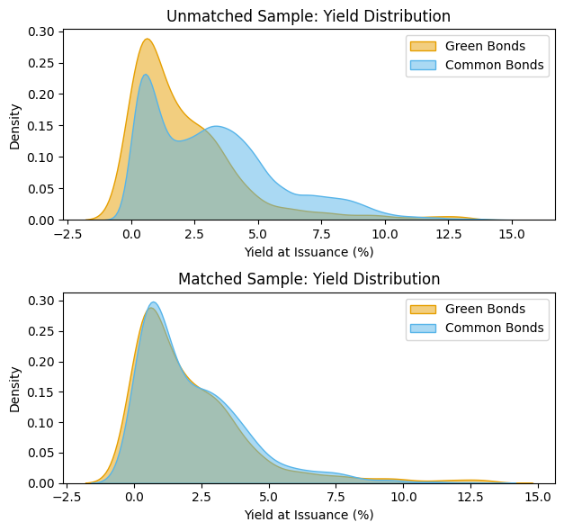
Key Takeaways:
- The lack of significant differences confirms that matching was successful, meaning the two groups are balanced.
- There is no strong evidence that green bonds have significantly different yields or financial characteristics compared to common bonds.
Want to dive deeper? If you want to explore the Python code, API data pipelines, and raw methodology behind this analysis, please check out the full technical notebook on my GitHub.